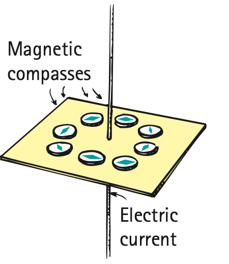

1. What kind of electric charge motion produces a magnetic field?
2. Describe the basic shape of the magnetic field around a straight current-carrying wire.
3. How can a compass reveal that current is producing a magnetic field?
4. How does bending a current-carrying wire into a loop change the overall field pattern?
5. What is the main idea captured by the word electromagnetism?
6. Use the compass-around-wire figure. Describe the evidence that the magnetic field wraps around the wire rather than pointing only along the wire.

7. A student reverses the current in a straight wire. Predict what should happen to the direction of the magnetic field around the wire and to nearby compass deflections.
8. Compare the field of a straight wire with the field of a circular loop. Explain how bending the wire allows field contributions to reinforce through the center region.
9. Two coils have the same current, but one has many closely spaced turns and the other only a few. Predict which should have a more concentrated coil field and explain qualitatively.
10. A compass near a wire deflects only when the switch is closed. Explain why this is evidence for a connection between moving charge and magnetism.
11. A student says, “Electric current creates a magnetic field only at the wire surface.” Use field evidence from compasses at different positions to critique the claim.
12. Two models are proposed for a straight wire: Model A shows field lines running parallel to the wire; Model B shows loops around the wire. Explain what observation could distinguish the models.
13. What is the source of the magnetic field around an ordinary current-carrying wire?
14. The field around a long straight current-carrying wire is modeled as
15. A nearby compass deflects when a circuit is closed. The observation most directly indicates
16. Compared with one loop, a coil of many current-carrying loops can
17. Electromagnetism refers to the idea that
18. If current direction in a straight wire is reversed, the magnetic-field direction around it
19. Which device is useful for sampling the local direction of a current-produced magnetic field?
20. Which observation best tests whether current is responsible for a compass deflection?